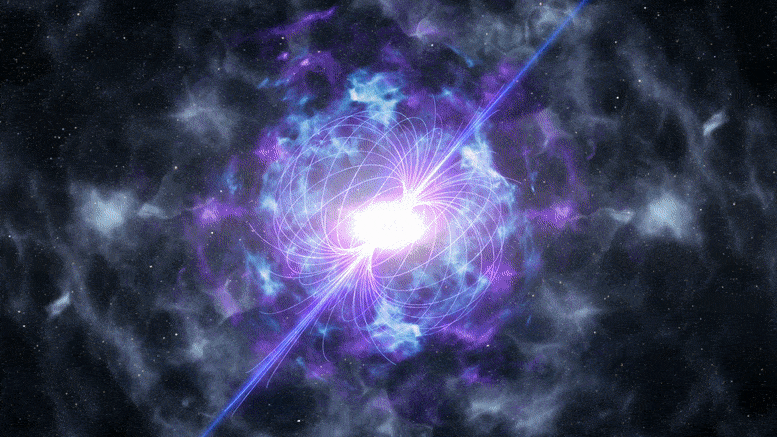
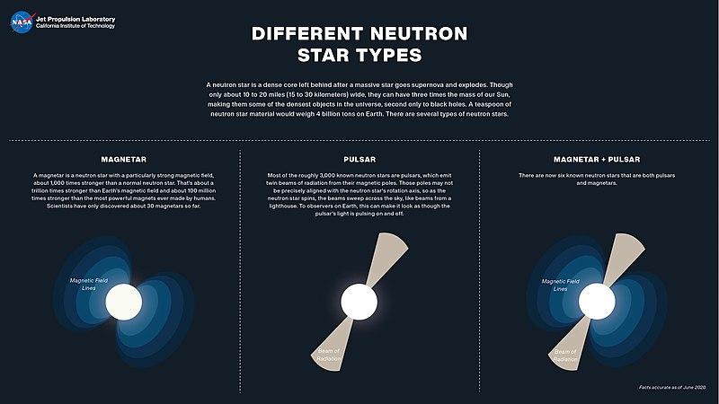
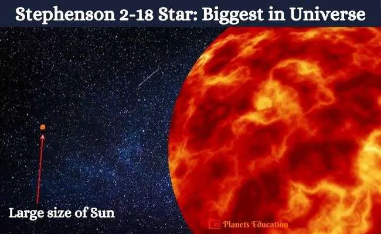

Los agujeros negros son regiones del espacio donde la gravedad es tan intensa que nada, ni siquiera la luz, puede escapar de su atracción. Se forman a partir del colapso de estrellas masivas y tienen una densidad extremadamente alta en su centro, conocida como singularidad. Los agujeros negros pueden variar en tamaño, desde pequeños hasta supermasivos, y desempeñan un papel crucial en la astronomía, ayudando a comprender la física de la gravedad y la evolución de las estrellas y las galaxias. Son uno de los fenómenos más enigmáticos y asombrosos del universo.
Estrellas de Neutrones

Las estrellas de neutrones son remanentes estelares extremadamente densos y compactos que se forman a partir del colapso de una estrella masiva después de una explosión de supernova. Tienen una masa similar a la del Sol, pero su tamaño es del orden de 20 kilómetros de diámetro. La materia en una estrella de neutrones está compuesta principalmente por neutrones, partículas subatómicas sin carga eléctrica.
Debido a su extrema densidad, una cucharadita de materia de una estrella de neutrones pesaría miles de millones de toneladas en la Tierra. La gravedad en la superficie de una estrella de neutrones es tan intensa que distorsiona el espacio-tiempo, lo que da lugar a fenómenos como la curvatura de la luz.
Las estrellas de neutrones son objetos fascinantes que han sido fundamentales en la comprensión de la física de partículas, la relatividad y la astrofísica. También son fuentes de emisión de radiación de alta energía, como rayos X y pulsos regulares de radio, lo que las convierte en objetos importantes para la observación y el estudio en el campo de la astronomía.

Magnetares
Las magnetares son un tipo especializado de estrella de neutrones con campos magnéticos excepcionalmente intensos, miles de millones de veces más fuertes que los campos magnéticos típicos de las estrellas de neutrones. Estos campos magnéticos tan extremos son el resultado de la conservación del momento angular durante el colapso de la estrella masiva que da lugar a una magnetar.
Estas estrellas de neutrones altamente magnetizadas pueden generar una gran variedad de fenómenos violentos, incluyendo explosiones de rayos gamma y fulguraciones de rayos X. La energía liberada en estas explosiones puede superar a la de miles de soles en un instante. Las magnetars también son conocidas por experimentar cambios en su período de rotación y en la emisión de rayos X, lo que las hace objeto de gran interés en la astrofísica y el estudio de los campos magnéticos extremos en el universo.
Stephenson 2-18

La estrella Stephenson 2-18 es una supergigante roja ubicada en la constelación de Scutum, a aproximadamente 19,400 años luz de distancia de la Tierra. Es una de las estrellas más grandes conocidas, con un diámetro estimado de alrededor de 2,150 veces el del Sol. Además, es una de las estrellas más luminosas del universo, con una luminosidad que supera las 430,000 veces la del Sol.
Stephenson 2-18 es parte de un cúmulo estelar masivo, lo que significa que comparte su espacio con numerosas estrellas y es un objeto de gran interés en la astrofísica. El estudio de esta estrella y su entorno puede proporcionar información valiosa sobre la formación y evolución de estrellas supermasivas, así como sobre la dinámica de los cúmulos estelares en el universo.
TON-618
TON 618 es un cuásar extremadamente luminoso y masivo que se encuentra a una distancia de unos 10.37 mil millones de años luz de la Tierra. Los cuásares son núcleos galácticos activos con agujeros negros supermasivos en su centro que emiten cantidades masivas de energía. TON 618 es uno de los cuásares más brillantes conocidos y es especialmente interesante debido a su alta luminosidad y su agujero negro central, que se estima que tiene una masa de alrededor de 66 mil millones de veces la del Sol.
El estudio de TON 618 proporciona información importante sobre las condiciones del universo en sus primeras etapas y la formación y evolución de agujeros negros supermasivos en el centro de las galaxias. También arroja luz sobre los procesos que dieron lugar a la radiación y la luminosidad extrema de los cuásares en el universo temprano.